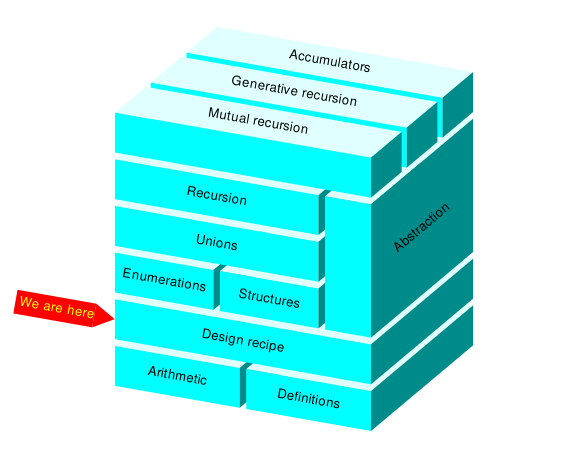
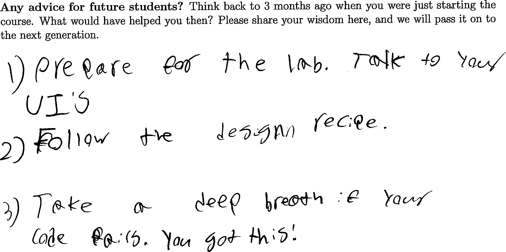

8.3
Lab 2: The design recipe

Important Note:
Whenever you write a function in this class, you need to follow the design recipe.
In particular, every type mentioned in a signature must be introduced
by a data definition, except for these well-known types:
Number, Image, String, Color.

1 Designing functions
To practice the design recipe, let’s re-do some exercises from Problem set 2: Robert Indiana.
Refer to your work on it, and feel free to ask questions about it as always.
Exercise 1.
Design a function cube that takes a number as input and returns its cube.
Write at least two examples using check-expect.
Exercise 2.
Design a function diamond that takes a string and returns an image of
it inside a circle inside a diamond.
Write at least two examples using check-expect.
Hint: When the expected output of your example needs to be an image, make it in
a separate DrRacket tab, so that the incomplete program in your main tab
doesn’t interfere with getting the image right. Then, copy back to the main tab
not the produced image but the expression you used to produce the image.
Saving the expression in your example will help you come up with the definition
of the function.
Exercise 3.
Design a function arrow that takes two colors and returns an image of
an arrow of the first given color inside a circle of the second given color.
Write at least two examples using check-expect.

Exercise 4.
Design a function digit that takes a number and returns an image of it
inside a square. Both the size of the number and the size of the square should
be proportional to the given number.
Write at least two examples using check-expect.
2 Composing functions
Exercise 5.
Design a function
cube-digit that takes a number and returns an image of
its cube
inside a square. Both the size of the number and the size of the square should
be proportional to
the cube of the given number.
Write at least two examples using
check-expect.
Use your
cube and
digit functions; pay attention to their signatures:
| ; cube : Number -> Number |
| ; digit : Number -> Image |
Remember that
using something means putting its
name in your
code, so your definition of
cube-digit should contain the names
cube and
digit, and not the names
text or
* or
expt.
Exercise 6.
Design a
function diptych that takes two strings and returns an
image of them side-by-side, each inside a circle inside a diamond.
Write at least two examples using
check-expect.
Use your
diamond function and the
beside function
provided by the
2htdp/image library; pay attention to their signatures:
| ; diamond : String -> Image |
| ; beside : Image Image -> Image |
Remember that
using something means putting its
name in your
code, so your definition of
diptych should contain the name
diamond, and not the names
overlay or
text or
circle.
Exercise 7.
Design a function "womb" that takes 4 colors (not 8) and returns an
image made of 4 arrows with the given colors, pointing in different directions.
In particular, (womb "yellow" "blue" "red" "dark green") should
produce an image like this:
| ; arrow : Color Color -> Image |
| ; rotate : Number Image -> Image |
| ; beside : Image Image -> Image |
| ; above : Image Image -> Image |
Exercise 8.
Design a function
cube-diamond that takes a number (not string) as
input and returns an image of it inside a circle inside a diamond.
Write at least two examples using
check-expect.
Use your
cube and
diamond functions, as well as the
built-in function
number->string; pay attention to their signatures:
| ; cube : Number -> Number |
| ; diamond : String -> Image |
| ; number->string : Number -> String |
3 Food truck
Feel free to do this section in groups of any size.
To spread love and joy, and to make a little money, you and your friends decide
to open a food truck. Let’s design the menu of the food truck.
Exercise 9.
Write a data definition for an Order.
To start, put this in your Definitions Window:
That’s good enough for now, but the exercises below might require you to revise
this data definition. This data definition means that each customer will walk
up to your food truck and shout out a number as their order. Is this number
the diameter of the pizza they want, the length of the sub sandwich they want,
or something else?
Exercise 10.
If your group is larger than 2 students, feel free to split up and do this
exercise and the next exercise in parallel. However, it is very important that
you use the same data definition for an Order.
Design a function price-order that takes an Order and returns
its price (a number). Make sure that your design agrees with the data
definition you wrote above for an Order.
| ; price-order : Order -> Number |
Write at least two examples using
check-expect. It’s your business,
so feel free to compute the price however you want, but according to the
signature, your function’s job is to return a number whenever it gets an
Order.
Exercise 11.
Design a function draw-order that takes an Order and returns a
crude image of the food. Make sure that your design agrees with the data
definition you wrote above for an Order.
| ; draw-order : Order -> Image |
Write at least two examples using
check-expect. It’s your business,
so feel free to prepare the food however you want, but according to the
signature, your function’s job is to return an image whenever it gets an
Order.
Exercise 12.
What happens if you feed the number -1234567/89 to the functions you
just defined? What range or kind of numbers can your functions actually handle
correctly? Revise your data definition if necessary. For example, to avoid an
error message or a negative price, you might change your data definition like
this:
| ; An Order is a Number between 1 and 12 |
Review your designs of price-order and draw-order to make
sure that they agree with your revised data definition. In particular, every
example input should be an Order.
If you like your designs, feel free to post their first few steps on Discord.
Exercise 13.
Go visit another group and try out their menu:
Read their data definition carefully, but don’t bother reading the rest of their code.
Make an Order. Make sure to obey their data definition for what an Order is.
Give your order to the draw-order function in their Interactions Window. Is it appetizing?
Give the same order to the price-order function in their Interactions Window. Is it worth it?
4 Extra fun
Exercise 14.
Design a function vertical-triband that takes three colors as
inputs and produces a vertical triband flag image that is 150 wide and 100 tall,
such as the flag of France.
Write at least two examples using check-expect.
Exercise 15.
Some triband flags have horizontal rather than vertical bands.
For example, the flag of the Netherlands has three horizontal bands,
whose colors are dark red, white, and dark blue.
Use vertical-triband to design a function horizontal-triband that takes three colors as inputs and produces a horizontal triband flag image.
Write at least two examples using check-expect.